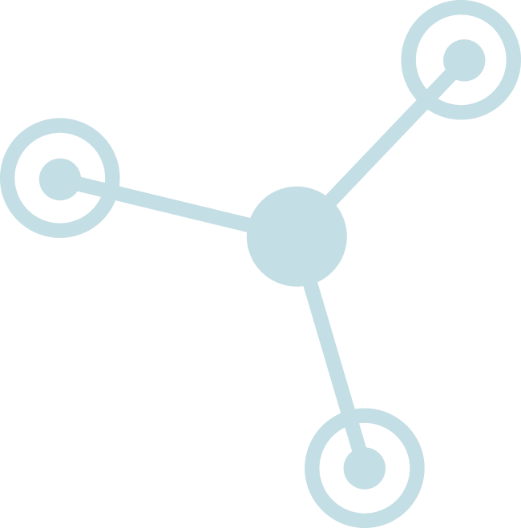
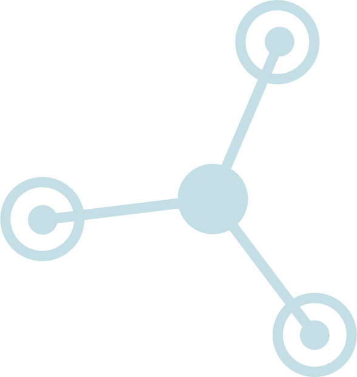
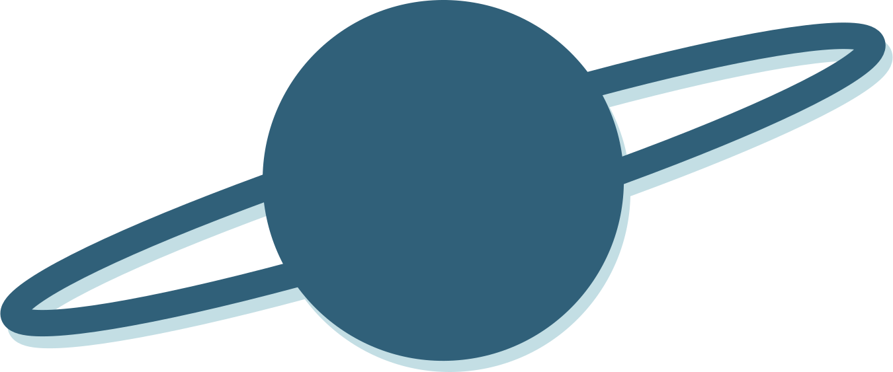

ALPHABET
A B C D E F G H I J K L M
N O P Q R S T U V W X Y Z
a b c d e f g h i j k l m
n o p q r s t u v w x y z



Space Mono is a monospaced webfont type family that was designed by The Colophon Foundry in 2015 specifically for Google Design. It was developed for editorial use in display and headline typography. The Colophon Foundry was established in 2009 as a digital type foundry. They are based in London and Los Angeles, comprising of Benjamin Critton, Edd Harrington, and Anthony Sheret as their head members. They also work in editorial design, publishing, curation, and pedagogy.
Space Mono supports an extended Latin glyph set, allowing typesetting for English and other Western European languages. The letterforms of this webfoot infuse a geometric foundation and fanciful details, along with qualities that are often found in many headline typefaces of the 1960s.
A B C D E F G H I J K L M
N O P Q R S T U V W X Y Z
a b c d e f g h i j k l m
n o p q r s t u v w x y z
0 1 2 3 4 5 6 7 8 9
‘ ? ’ “ ! ” ( % ) [ # ] { @ } / & \ <
- + ÷ × = > ® © $ € £ ¥ ¢ : ; , . *
Dear Marty, If my calculations are correct, you will receive this letter immediately after you saw the DeLorean struck by lightning.
First, let me assure you that I'm alive and well. I've been living happily these past 8 months in the year 1885. The Lightning bolt that hit the DeLorean cause a gigowat overload which scrambled the time circuits, activated the flux capacitor and, and sent me back to 1885. The overload shorted out the time circuits and destroyed the flying circuits. Unfortunately the car will never fly again. I set myself up as a blacksmith, as a front while I attempted to repair the damage to the time circuits. Unfortunately, this proved impossible because suitable replacement parts won't be invented until 1947. However, I've gotten quite adept in shoeing horses and fixing wagons.
I've buried the DeLorean in the abandoned DelGado mine, adjacent to the old Boot Hill Cemetery as shown on the enclosed map. There it should remain undisturbed and preserved until you uncover it in 1955.
Inside you will find repair instructions. My 1955 counterpart should have no trouble repairing it so that you can drive it back to the future. Once you have returned to 1985 destroy the time machine...I am perfectly happy living in the fresh air and wide open spaces. And I feel that unnecessary time travel only risks further disruption of the time line. And please take care of Einstien for me...I know you will give him a good home. Remember to walk him twice a day and that he only likes canned dog food. These are my wishes. Please respect them and follow them. And so, Marty, I now say farewell and wish you godspeed. You have always been a good and loyal friend to me, and you have made a real difference in my life. I will always treasure our relationship, and think on you with fond memories, warm feelings, and a special place in my heart. Your friend in time, "Doc" Emmett L. Brown September 1, 1885.